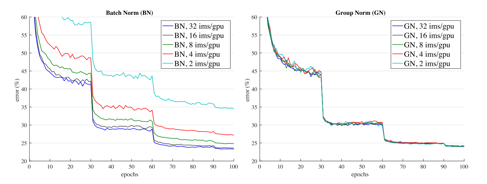
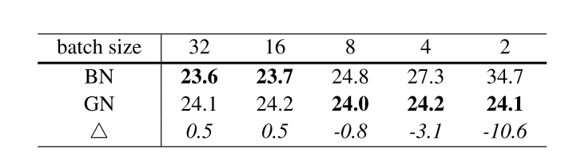
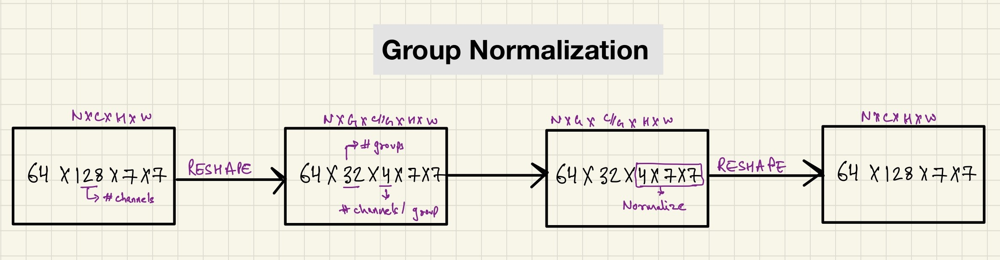

Group Normalization
In this blog post, we will look at Group Normalization research paper and also implement Group Normalization in PyTorch from scratch.
1 Introduction
In this blog post today, we will look at Group Normalization research paper and also look at: - The drawback of Batch Normalization for smaller batch sizes
- Introduction to Group Normalization as an alternative to BN - Other normalization techniques available and how does Group Normalization compare to those - Benefits of Group Normalization over other normalization techniques - Discuss the optimal number of groups as a hyperparameter in GN - Discuss effect of Group Normalization on deeper models (eg. Resnet-101) - Implement Group Normalization in PyTorch and Tensorflow - Implement ResNet-50 with [GroupNorm + Weight Standardization] on Pets dataset and compare performance to vanilla ResNet-50 with BatchNorm layer
Batch Normalization is used in most state-of-the art computer vision to stabilise training. BN normalizes the features based on the mean and variance in a mini-batch. This has helped improve model performance, reduce training time and also helped very deep models converge.
But this technique also suffers from drawbacks - if batch size is too small, training becomes unstable with BN.
The aim of this blog post is not to study BN, many other wonderful posts have been written on that, but to look at other alternatives such as GN.
Through this blog post, I hope to introduce Group Normalization as an alternative to Batch Normalization and help the reader develop an intuition for cases where GN could perform better than BN.
1.1 Drawback of Batch Normalization
Knowingly or unknowingly, we have all used BN in our experiments when training a deep learning network. If you have trained a ResNet model or pretty much any other CV model using PyTorch or Tensorflow, you have made use of BN to normalize the deep learning network.
From the Group Normalization research paper, > We all know that BN has been established as a very effective component in deep learning. BN normalizes the features by the mean and variance computed within a batch. But despite its great success, BN exhibits drawbacks that are also caused by its distinct behavior of normalizing along the batch dimension. In particular, it is required for BN to work with sufficiently large batch size. A small batch size leads to innacurate estimation of the batch statistics and reducing BN’s batch size increases the model error dramatically.
Essentially, what that means is that BN is not very effective if the batch sizes are too small. Especially for CV applications other than Image classification such as object detection, segmentation, video classification, the restriction on batch sizes are more demanding and it is difficult to have higher batch sizes.
Especially in such cases, GN can be used a strong alternative to BN.
Or, there could be cases where you might want to try a bigger capacity model leaving less space in the GPU to fit a bigger batch size. In such cases as well, you might want to try GN as an alternative.
1.2 Introduction to Group Normalization
In the paper, the authors introduce GN as a simple alternative to BN. From the paper:
GN divides the channels into groups and computes within each group the mean and variance for normalization. GN’s computation is independent of batch sizes, and its accuracy is stable in a wide range of batch sizes.
Essentially, GN takes away the dependance on batch size for normalization and in doing so mitigates the problem suffered by BN. There are also other techniques that have been proposed to avoid batch dimension - but we will discuss them later. For now, it is essential for the reader to realize that instead of normalizing accross the batch dimension, GN normalizes accross the groups (channel dimension). This has been further explained in depth later in this post here.
First, let’s look at how GN compares to BN for training accross various batch sizes keeping all else same.

As can be seen in the image above, because GN does not depend on the batch size, the validation classification error (when the deep learning model is normalized using GN) is stable accross various batch sizes compared to BN.

The same trend as in fig-1 can also be observed in fig-2 where the validation error is consistent accross various batch sizes for GN as opposed to BN. Another key thing to note, the validation error for GN as reported in the research paper is very similar to that for BN - therefore, GN can be considered to be a strong alternative to BN.
The validation errors (from the research paper) for various batch sizes are presented in table-1 below:

While BN performs slightly better than GN for batch size 32, GN performs better for all lower batch sizes.
2 Other Normalization Techniques
Group Normalization isn’t the first technique that was proposed to overcome the drawback of BN. There are also several other techniques such as Layer Normalization, Instance Normalization and others mentioned in the references of this blog post.
But, GN is the first technique to achieve comparable validation error rates as compared to BN.
In this section we look at the most popular normalization tecniques namely - Layer Normalization (LN), Instance Normalization (IN), Batch Normalization (BN) and Group Normalization (GN).
2.1 Group Normalization in detail and comparison to other normalization techniques

The above image presented in the research paper is one of the best ways to compare the various normalization techniques and get an intuitive understanding for GN.
Let’s consider that we have a batch of dimension (N, C, H, W) that needs to be normalized.
Here, - N: Batch Size - C: Number of Channels - H: Height of the feature map - W: Width of the feature map
Essentially, in BN, the pixels sharing the same channel index are normalized together. That is, for each channel, BN computes the mean and std deviation along the (N, H, W) axes. As we can see, the group statistics depend on N, the batch size.
In LN, the mean and std deviation are computed for each sample along the (C, H, W) axes. Therefore, the calculations are independent of the batch size.
In IN, the mean and std deviation are computed for each sample and each channel along the (H, W) axes. Again, the calculations are independent of batch size.
2.2 Group Normalization Explained

Finally, for group norm, the batch is first divided into groups (32 by default, discussed later). The batch with dimension (N, C, W, H) is first reshaped to (N, G, C//G, H, W) dimensions where G represents the number of groups. Finally, the mean and std deviation are calculated along the groups, that is (H, W) and along C//G channels. This is also illustrated very well in fig-4.
One key thing to note here, if C == G, that is the number of groups are set to be equal to the number of channels (one channel per group), then GN becomes IN.
And if, G == 1, that is number of groups is set to 1, GN becomes LN.
I would like for the reader to take a minute here and make sure that he/she understands the differences between these normalization techniques mentioned above.
2.3 Benefits of Group Normalization over other techniques
Also, it is important to note that GN is less restricted than LN, because in LN it is assumed that all channels in a layer make “equal contributions” whereas GN is more flexible because in GN, each group of channels (instead of all of them) are assumed to have shared mean and variance - the model still has flexibility of learning a different distribution for each group.
Also, GN is slightly better than IN because IN normalizes accross each sample for each channel, therefore, unlike GN, it misses the opportunity of exploiting the channel dependence.

Therefore, due to the reasons discussed above, we can see that the validation and training errors for GN are lower than those for LN and IN.
3 Number of Groups hyperparameter in Group Normalization
One key hyperparameter in Group Normalization is the number of groups to divide the channels into.

The authors of the research paper ran an experiment to train ResNet-50 model on Imagenet dataset using various number of groups.
As can be seen in table-2, setting number of groups to 32 achieves the lowest validation error.
In the bottom part of table-2, the authors set a fixed number of channels per group. Essentially, since each layer in a deep learning model can have various number of channels, this means there are varying number of groups per layer. Setting 16 channels per group achieved the lowest score.
3.1 Group Division Experiments Explained

Let’s understand what’s going on with help of VGGNet. As can be seen, there are varying number of channels in different layers of VGGNet (this is also the case for other deep learning models like ResNet, DenseNet etc). The authors essentially in the first experiment, divide each layer into 32 groups. Thus for layer 2 of VGGNet with 128 #channels, there are 128//32, that is, 4 channels per group if group number is set to 32. The authors ran this experiments for varying number of groups and found for number of groups set to 32 to have the lowest validtion error.
For the second experiment, the authors set the number of channels per group fixed. For example, if number of channels per group was set to 16, then the second layer with 128 channels had 128//16, that is, 8 groups and the third layer with 256 channels had 256//16, 16 groups and so on. The authors found setting 16 channels per group to have to have the lowest validation error.
4 Effect of Group Normalization on deeper models
The authors also ran experiments and trained ResNet-101 architecture for batch size 32 and compared the validation errors with BN and GN implementation. The authors found the BN baseline to have 22.0% validation error and the GN counterpart to have 22.4% validation error. Also, for batch size 2, the authors found the GN error to be 23.0% which is still a very decent result considering the very small batch size.
Thus, I think from the results of this experiment, it is safe to say that GN with smaller batch sizes also works for larger models.
5 Implementation of GroupNorm
Finally, we are now ready to look at the implementation of GN.
The following snippet of code has been provided in the research paper:
def GroupNorm(x, gamma, beta, G, eps=1e−5):
# x: input features with shape [N,C,H,W]
# gamma, beta: scale and offset, with shape [1,C,1,1]
# G: number of groups for GN
N, C, H, W = x.shape
x = tf.reshape(x, [N, G, C // G, H, W])
mean, var = tf.nn.moments(x, [2, 3, 4], keep dims=True)
x = (x − mean) / tf.sqrt(var + eps)
x = tf.reshape(x, [N, C, H, W])
return x ∗ gamma + betaEssentially, the authors reshape the batch and divide into groups with C // G channels per group where, - C: number of channels - G: number of groups
Finally, as discussed in this section, the authors normalize along the (C//G, H, W) dimension and return the result after reshaping the batch back to (N, C, H, W).
I hope that by this time, the implementation should be clear to the reader. If it isn’t, either I have not explained GN very well, or I kindly ask the reader to go back to Group Normalization Explained section and have a quick re-read.
Finally, we could rewrite GN in PyTorch like so:
import torch
import torch.nn as nn
class GroupNorm(nn.Module):
def __init__(self, num_features, num_groups=32, eps=1e-5):
super(GroupNorm, self).__init__()
self.gamma = nn.Parameter(torch.ones(1,num_features,1,1))
self.beta = nn.Parameter(torch.zeros(1,num_features,1,1))
self.num_groups = num_groups
self.eps = eps
def forward(self, x):
N, C, H, W = x.size()
x = x.view(N, self.num_groups ,-1)
mean = x.mean(-1, keepdim=True)
var = x.var(-1, keepdim=True)
# normalize
x = (x-mean) / (var+self.eps).sqrt()
x = x.view(N,C,H,W)
return x * self.gamma + self.betaPyTorch also inherently supports GroupNorm and can be used by using nn.GroupNorm.
Having implemented GN in PyTorch and Tensorflow, we are now ready to run our own experiments and see the results for ourselves in the next section.
6 Does GroupNorm really work in practice?
Personally, I wanted to try a little experiment of my own to compare GN with BN and corroborate the findings in the GN research paper.
You can find the experiment in this notebook here.
Basically, in the experiment, I trained two ResNet-34 architectures on the Pets dataset - one with BN and other with GN. To my surprise, I found that simply replacing BatchNorm with GroupNorm led to sub-optimal results and the model with GroupNorm used as the normalization layer performed much worse than the model normalized with BatchNorm layer even for a very small batch size of 4. This was very different to the results reported in fig-1.
Thanks to Sunil Kumar who pointed me to Big Transfer (BiT): General Visual Representation Learning research paper where I noticed that the researchers used a combination of Weight Standardization and GN to achieve SOTA results. So I tried this out with the implementation of Weight Standardization as in the official repository here and very quickly I was able to replicate the results with GN + WS performing significantly better than BN for batch size of 1 here.
7 Conclusion
I hope that I have been clear in my explaination of Group Normalization, and also through my experiments, I have been able to provide a way for you to implement GN in PyTorch and Tensorflow and run experiments of your own.
As always, constructive feedback is always welcome at @amaarora.
Also, feel free to subscribe to my blog here to receive regular updates regarding new blog posts. Thanks for reading!
8 References
- Group Normalization by He et al
- Batch Normalization by Ioffe et al
- Instance Normalization: The Missing Ingredient for Fast Stylization
- Layer Normalization
- Weight Standardization
- Implementation of Weight Standardization from the official repository
- Deep Residual Learning for Image Recognition
9 Credits
Thanks to @AryMob for pointing out errata in this post.